From camera rays
to reflected light
Overview
We built a path tracer that follows rays from the camera into a scene. We find the first surface each ray reaches, estimate light from visible sources, and follow reflected paths to account for light arriving through other surfaces. We also built a tree of bounding boxes to avoid checking every triangle and sphere for every ray.
We kept the main implementation straightforward: direct intersection formulas, a recursive box tree, diffuse reflection, and one sampled direction per indirect bounce. We added controlled modes for the required comparisons. The progression from normal colors to direct light and then reflected light makes it clear that finding geometry and estimating light solve different parts of the image.
We generated the figures with the renderer's windowless PNG output at 480 by 360 pixels. We kept the original PNG files. The render manifest records each scene, sample count, light count, depth, command, and measured duration; the settings beneath each figure identify the comparison.
Part 1 - Camera rays and scene intersections
We map each sample within a pixel to a point on a rectangular sensor at z = -1 in camera coordinates. The sensor size comes from the horizontal and vertical viewing angles. We rotate that direction into the scene, normalize it, and start the ray at the camera position. The near and far clipping distances limit which hits count. We average the returned light over all samples taken for the pixel.
For a triangle, we solve for the ray distance and two weights along its edges. This is the Moller-Trumbore method. If either weight is negative, or their sum exceeds one, the intersection lies outside the triangle. We also reject distances outside the ray's allowed range. For a valid hit, the three weights blend the vertex normals, and we record the surface and its material. We shorten the ray's maximum distance so a later test cannot replace this hit with a farther one.
For a sphere, we substitute the ray into the sphere equation and solve the resulting quadratic. We try the nearer root first and use the farther one if necessary, including when the ray starts inside the sphere. The surface normal points from the center to the hit. These diagnostic images map the normal direction to color, so they check geometry without relying on our lighting code.

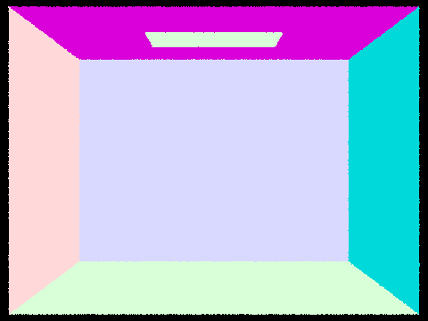

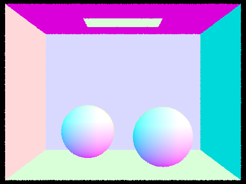

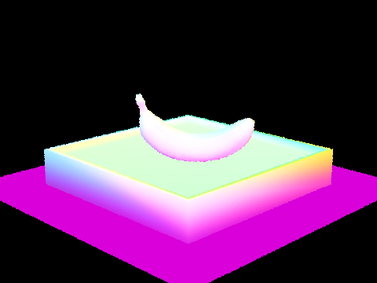
Part 2 - Bounding volume hierarchy
We first enclose every primitive in a bounding box. For an internal node, we choose the longest axis of the primitive centers and split at the midpoint of that range. We put centers on either side into two child groups and repeat until a leaf has at most four primitives. If a midpoint puts every primitive on the same side, we split at the median instead. That fallback ensures each recursive step makes progress.
We intersect a box by finding the ray interval inside each of its three axis ranges and taking their overlap. A direction component of zero needs special handling: the ray must already lie inside that axis range. During traversal, a missed box rejects its whole subtree. A shadow test stops at any hit, while a closest-hit test continues through relevant children using the shortened ray range.

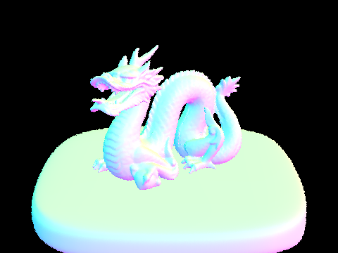

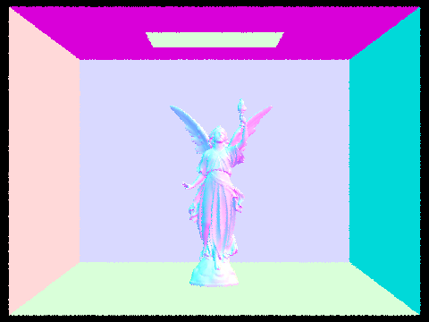
Measured acceleration
We ran on an Apple M2 with 8 GB of memory. We used six workers for the main renders and one worker for these timing comparisons, normal shading, and the same 480 by 360 view in each mode. The linear mode places all primitives in one leaf. The following values are the renderer's reported render and tree-build times in seconds, rather than the surrounding process duration. We measured one run per configuration, so scheduling and short durations can affect the ratios; small differences should not be treated as stable rankings.
| Scene | Linear render (s) | BVH render (s) | BVH build (s) | Render speedup |
|---|---|---|---|---|
| cow | 2.7599 | 0.0876 | 0.0010 | 31.51x |
| teapot | 1.6351 | 0.0809 | 0.0003 | 20.21x |
| beetle | 3.3707 | 0.0754 | 0.0012 | 44.70x |
We measured the following linear-to-BVH render-time ratios: cow: 31.51x; teapot: 20.21x; beetle: 44.70x. The box tests reduce the number of primitive tests, while construction adds a separate setup cost. These ratios describe these particular views and runs; the benefit depends on how much geometry each ray can skip.

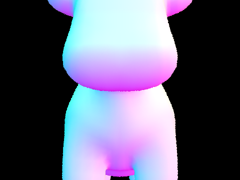

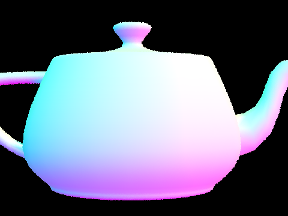

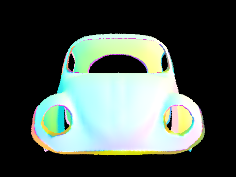
Part 3 - Direct illumination
We use diffuse reflectance divided by pi for the material response. Zero-bounce light is simply the emission of a surface seen by the camera. For direct light, our first method chooses directions uniformly over the hemisphere above the surface. We trace each direction and use the emission of its first hit. We multiply by the material response and the angle factor, then divide by the sampling density and number of samples.
Our second method samples the lights themselves. For each sample, we check whether another surface blocks the segment to the light. We ignore light directions below the surface, take one sample for a point light, and average the requested samples for an area light. Small offsets at both ends avoid mistaking the starting surface or light for a blocker.
We also corrected the starter area-light sampling calculation. Its conversion from a sampled area to a direction probability needs a cosine formed from unit directions. We normalized the light direction and sampled direction, used the cross product of the light's two edge vectors for its area, and handled zero area or distance. This keeps the light-sampling weight consistent with the geometry. The starter represents the sampled light and its visible emissive mesh separately, so small differences in their placement can still make the two methods differ slightly.

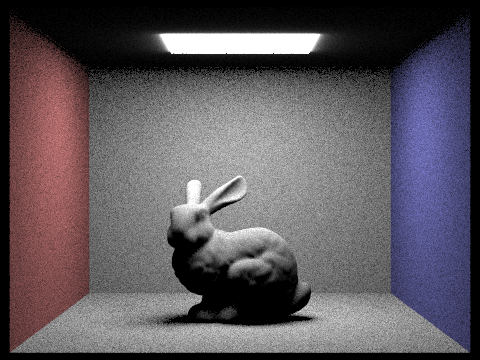


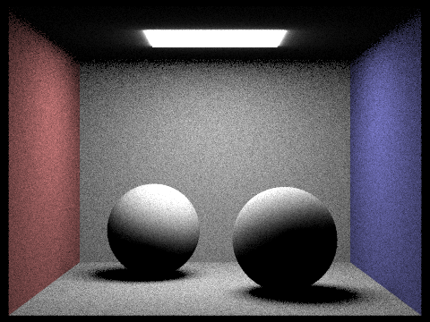

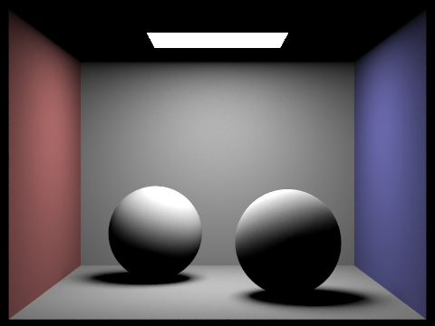
We compare these methods with matched camera and light sample counts. Hemisphere sampling spends many directions on nonemissive surfaces, which contribute zero to this direct-light estimate. Light sampling aims each trial at a source and uses a visibility test. We see much less grain in the walls and soft shadows with light sampling in both scenes. A point light is also practical to sample directly, while a random hemisphere direction has no chance of hitting an ideal point.
Soft-shadow sample count

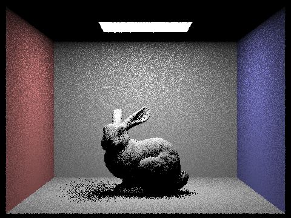

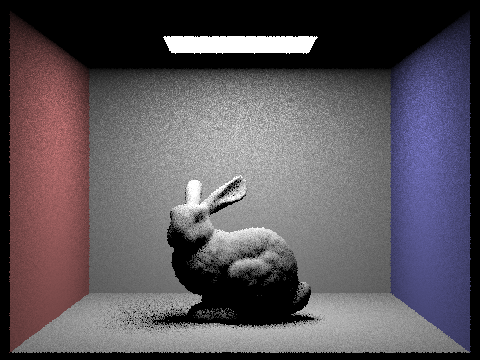

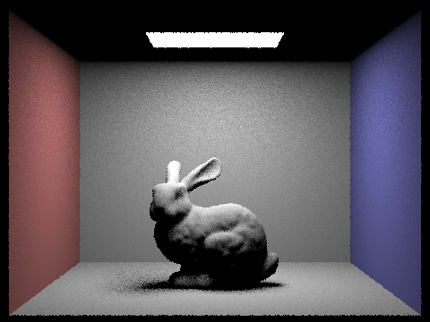

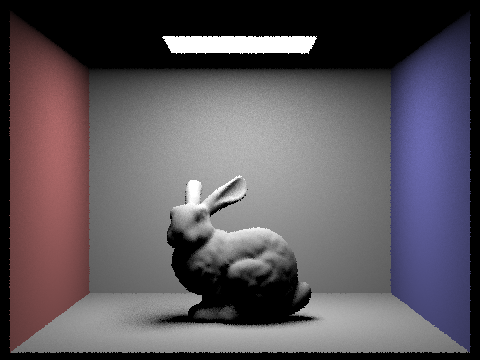
We hold the camera count at one sample per pixel and increase the area-light samples from 1 to 4, 16, and 64. Each sample tests one position on the light. Averaging more visibility tests makes the partly shadowed region more stable, although this sweep does not increase the number of camera samples along object edges.
Part 4 - Global illumination
We choose one reflected direction at each surface using the provided cosine-weighted sampler. We trace it into the scene and repeat the lighting calculation at the next hit. On return, we multiply by the material response and angle factor and divide by the direction's probability. We decrease the remaining depth at each step. This carries light between surfaces instead of considering only a direct path to a source.
In accumulated mode, we add all contributions up to the depth limit. In isolated mode, we keep only the requested bounce count. We count visible emission as bounce zero and direct surface lighting as bounce one. We include emission at the camera hit, but avoid adding it again through an indirect sample because the direct-light estimate already covers paths ending at a light.


Direct and indirect light


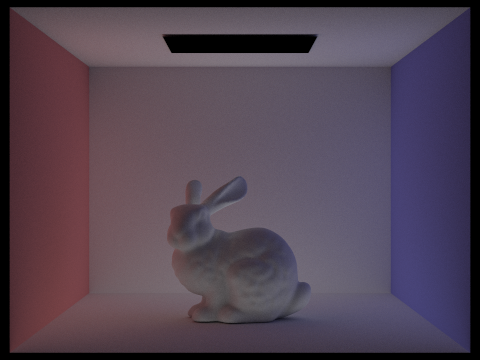
We keep the same bunny view and use 1024 camera samples in both images. The direct view contains a single surface reflection and the visible lamp. The indirect view suppresses both the camera-visible emission and the first direct contribution, leaving light that has reflected between surfaces. This separation exposes the light carried into shadowed regions and the color transferred by the walls.
Individual and accumulated bounces
We disable random termination for this comparison. Each row uses the same maximum depth, with an isolated contribution on the left and all contributions through that depth on the right. Every image uses 1024 samples per pixel.

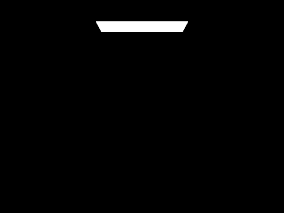

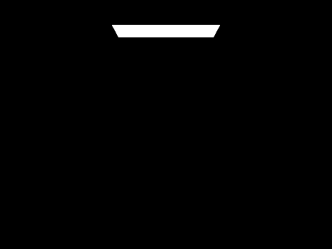

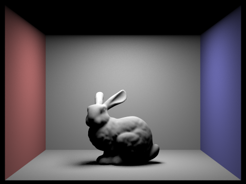

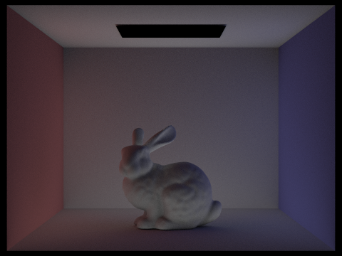


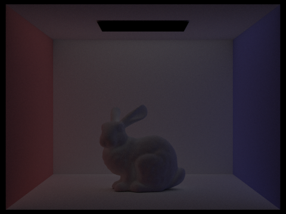


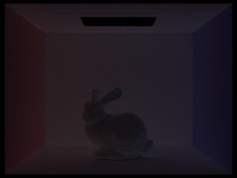

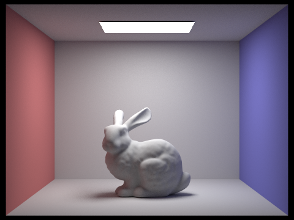

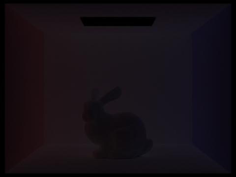
The second bounce carries light from an illuminated surface to another surface before reaching the camera. The third carries it through one more surface. These paths add wall color to nearby objects and supply light where the lamp is blocked. Higher-bounce images are weaker on their own, but their accumulated effect softens dark regions. Ordinary rasterization with only direct lighting does not compute these paths; it needs an added method to approximate this reflected light.
Russian Roulette
We always trace the first indirect bounce when depth permits it. After that, each further continuation survives with probability 0.65. We divide the surviving contribution by 0.65 to account for the paths we stop. The depth limit still applies. Random termination avoids following every long, weak path; a finite depth limit still omits paths beyond that limit.

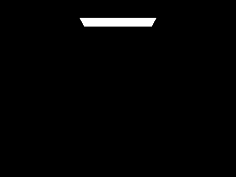


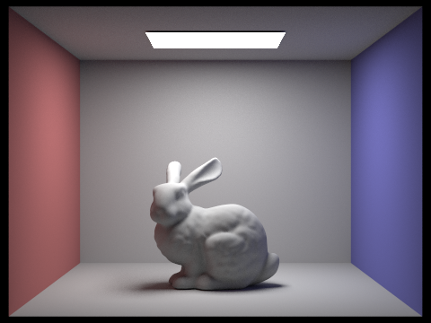


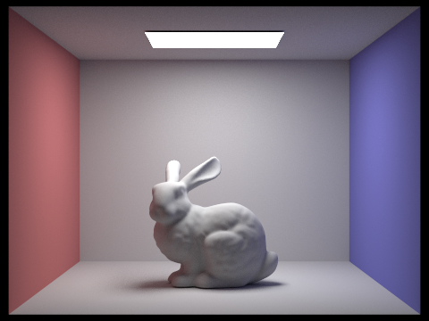

Camera samples per pixel


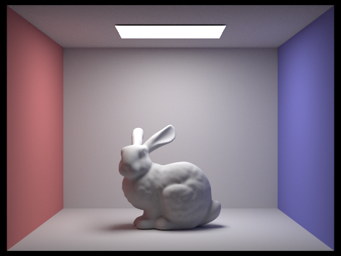
We use four samples per light and maximum depth five throughout this sweep. Increasing camera samples averages both the choices within each pixel and the sampled light paths. The low-count images show the variability of individual paths; the 1024-sample image provides a much more stable comparison at the same settings.
Part 5 - Adaptive sampling
We spend fewer samples on pixels whose average has settled. For each sample, we track its brightness and squared brightness. These two sums give the mean and sample variance without storing every ray result. After each batch of 64 samples, we compute 1.96 times the estimated standard error. We stop when that value is at most five percent of the mean, or when we reach 2048 samples.
We guard the variance calculation until at least two samples exist and clamp small negative values caused by rounding to zero. We divide the final color by the number of samples actually taken and store that count for the rate image. Both scenes below use one sample per light and maximum depth five. Blue marks a smaller fraction of the 2048-sample budget; red marks a larger fraction.


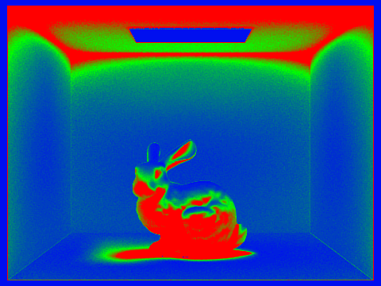

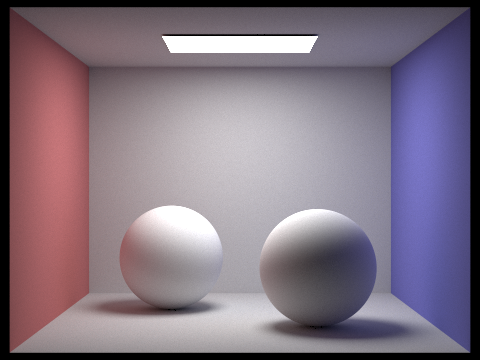

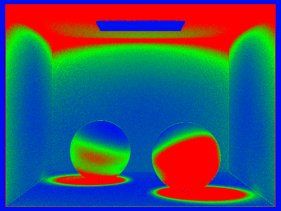
We see the largest budgets on the bunny and shadow regions, the lower parts of the spheres, and the ceiling. Much of the back wall settles earlier. We interpret the rate image as a record of effort, rather than an error map. Pixels whose sampled brightness varies need more trials before passing the test. Stable regions can stop after a batch, while partly blocked light paths and indirect-light variation can require more. The rule is a practical estimate: passing it does not prove that every rare light path has been found.
Part 6 - Extra credit
Surface-area split heuristic
We added an optional split rule using 12 bins along each axis. We place primitive centers in bins, build bounds for each side of every candidate split, and compare the sum of each side's box area times its primitive count. We choose the smallest cost with nonempty sides. This favors splits that should leave less geometry for later rays to test. The simple midpoint tree remains the default.
Iterative construction and traversal
We also added a mode that uses std::stack and a while loop for both tree construction and ray traversal. Each construction item stores a node and its primitive range. Each traversal item stores the next node to test. We push the right child before the left to preserve the recursive visiting order. Leaves and intersection formulas remain the same, so this comparison focuses on how we manage pending work.
| Scene | Mode | Build (s) | Render (s) |
|---|---|---|---|
| cow | midpoint | 0.0010 | 0.0876 |
| cow | sah | 0.0028 | 0.0766 |
| cow | iterative | 0.0009 | 0.0916 |
| teapot | midpoint | 0.0003 | 0.0809 |
| teapot | sah | 0.0012 | 0.0628 |
| teapot | iterative | 0.0004 | 0.0857 |
| beetle | midpoint | 0.0012 | 0.0754 |
| beetle | sah | 0.0040 | 0.0699 |
| beetle | iterative | 0.0012 | 0.0847 |
We measured these midpoint-to-surface-area render-time ratios: cow: 1.14x; teapot: 1.29x; beetle: 1.08x. A ratio above one is faster in this run; below one is slower. We report the construction cost separately and do not assume that replacing recursion or choosing a more elaborate split is always faster.
We measured these midpoint-to-iterative render-time ratios: cow: 0.96x; teapot: 0.94x; beetle: 0.89x. A ratio above one is faster in this run; below one is slower. We report the construction cost separately and do not assume that replacing recursion or choosing a more elaborate split is always faster.
Jittered pixel samples
We added an optional sampler that divides the pixel into equal-area cells and takes one random position in each cell. For a square count, these form a square grid. For other counts, row sizes preserve equal area. The default sampler chooses every position independently. We apply jittering only with a fixed sample count, since stopping partway through the grid would cover only part of the pixel.


| Camera samples/pixel | Sampler | Display RGB RMSE |
|---|---|---|
| 4 | random | 0.064517 |
| 4 | jittered | 0.064402 |
| 16 | random | 0.031861 |
| 16 | jittered | 0.031073 |
We compare each image with the 1024-sample image from the same depth-five, four-light-sample bunny view. The table gives root mean squared error over the saved RGB values scaled to 0 through 1. This is a display-image comparison, not a measurement of linear light, and the reference still has sampling noise. Jittering changes camera positions; it does not directly reduce the randomness of later light paths, so it need not improve every full-image measurement.


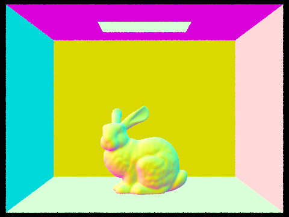

| Normal-shading comparison | Display RGB RMSE |
|---|---|
| jittered s4 | 0.022381 |
| random s4 | 0.026359 |
We use normal shading for this additional comparison so that surface-edge sampling is visible without random direct or indirect lighting. We compare both low-count samplers with the high-count reference. Distributing samples across pixel cells reduces clustering, but it cannot remove all edge error at a low sample count.
Bilateral denoising
We added an optional bilateral filter to the full-frame image-saving path. We filter the linear RGB light values before converting them to the saved display image. For each pixel, we average a 5 by 5 neighborhood with weights that decrease with both pixel distance and color difference. We use a spatial standard deviation of 1.5 pixels and a color standard deviation of 0.2. We normalize the weights so that a constant-color image stays constant, and ignore neighbors outside the image.
We apply this as an output step: the primary light buffer and sample counts remain unchanged. Both images below use 16 camera samples per pixel, four samples per light, depth five, one worker, and seed 184. They therefore start from the same sampled input; only the saved-image filter differs. We compare the flat wall and floor regions for grain and the bunny silhouette and shadows for lost detail.


| Output | Display RGB RMSE |
|---|---|
| Unfiltered | 0.031447 |
| Bilateral filter | 0.024332 |
We measure lower saved-image error after filtering in this comparison: 0.031447 before and 0.024332 after. We use the same 1024-sample reference and RGB values scaled to 0 through 1 as in the sampler study. The reference still contains noise, and this display-space score does not measure linear-light accuracy or guarantee that fine details are preserved.
We use only color and pixel distance; the filter has no surface normals or depth guides. It can mix different surfaces with similar colors and soften real detail, while large isolated errors can survive when their colors differ strongly from their neighbors. We treat the filter as an optional tradeoff between grain and detail, rather than a replacement for enough light samples.
Optional work not implemented
We did not implement compressed BVH storage, new live-rendering GUI features, a separate parallelization optimization, a more advanced adaptive rule, another acceleration structure, non-axis-aligned boxes, bidirectional path tracing, photon mapping, Metropolis Light Transport, Vertex Connection and Merging, or GPU execution. The shared primitive vector already present in the starter is not a new memory-saving extension. We deferred motion blur because choosing the moving subject, motion, and scene requires artistic direction.
Reproduction and source material
We checked the core formulas, tree modes, and filter with three passing test targets. The geometry checks include 18,000 randomized comparisons against direct primitive tests. A separate light-sampling check verifies the corrected area-light probability, and the filter checks cover constant colors, impulse smoothing, edge behavior, and empty images. These checks complement the rendered views; they do not replace inspecting the images.
We record all render commands in docs/render_manifest.csv. Environment controls are HW3_NORMALS=1 for normal colors, HW3_BVH_DISABLE=1 for linear intersection, HW3_BVH_SPLIT=sah for the area-based split, HW3_BVH_ITERATIVE=1 for stack-based tree work, HW3_RR=0 for fixed-depth paths, HW3_INDIRECT_ONLY=1 for indirect light, HW3_SAMPLER=jittered for stratified pixel positions, and HW3_DENOISE=1 for bilateral filtering when saving a full frame. The harness sets a fixed seed with HW3_SEED=184. With several workers, scheduling can change which random stream reaches a pixel, so repeated renders need not be pixel-identical.
We used the official Fall 2026 HW3 instructions for camera rays and intersections, bounding volume hierarchy, direct illumination, global illumination, adaptive sampling, extra credit, and deliverables. Links to those pages appear below. Our requirements audit is in docs/REQUIREMENTS.md.
Part 1 / Part 2 / Part 3 / Part 4 / Part 5 / Extra credit / Deliverables
Partner collaboration
We worked together on every part of the assignment. We kept the implementation, render commands, and written explanations together so we could connect each stage to its results. The comparisons show why we need both correct geometry and enough light samples: the first determines which surface a ray reaches, while the second determines how steadily we can estimate its brightness.
Acknowledgment of AI assistance
We used OpenAI Codex to retrieve and organize the assignment requirements, generate and revise the implementation, inspect and debug the build, prepare the render commands and comparison tables, and draft and format this report. AI assistance covered both code and writing. The figures come from running the renderer, and the numeric comparisons are computed from the saved outputs and render manifest.